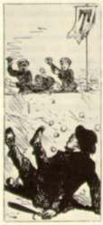

|
ALDRICH'S TOM
Thomas Bailey Aldrich's Story of a Bad Boy first
appeared serially, in 1869 in Our Young Folks
magazine. The "bad boy" is named Tom Bailey, and is, as
Alrich's adult narrator says at the outset, "not such a
very bad, but a pretty bad boy." The title makes it clear
that Aldrich, like MT, intends his story as a kind of
counter-narrative: neither Tom is a "model boy." Aldrich's
book is an account of his childhood in "Rivermouth," New
Hampshire, and focuses on various adventures as remembered
and retold by the man he grew into. I picked the selection
below because it helps suggest how much a fiction like this
one, or Tom Sawyer, or even Little Women,
although ostensibly written for children, appeals to the
generation of contemporary grown ups as an act of
nostalgia. Here, as the narrator describes heroism in
combat, what is obviously being evoked and nostalgically
elided at the same time is the Civil War (which was when
Americans learned to read "order of battle maps" like the
one Aldrich includes). In the simpler times being
remembered, young men from the "North" and "South" fight
bravely -- and no one dies or is permanently disfigured.
Neither Bailey nor MT fought in the War, but I'm sure their
accounts of ante-bellum innocence helped contemporaries
struggling to digest the trauma of the War. |
|
 HE memory of man, even that of the Oldest Inhabitant, runneth not back to the time when there did not exist a feud between the North End and the South End boys of Rivermouth. The origin of the feud is involved in mystery; it is impossible to say which party was the first aggressor in the far-off ante-revolutionary ages; but the fact remains that the youngsters of those antipodal sections entertained a mortal hatred for each other, and that this hatred had been handed down from generation to generation, like Miles Standish's punch-bowl. I know not what laws, natural or unnatural, regulated the warmth of the quarrel; but at some seasons it raged more violently than at others. This winter both parties were unusually lively and antagonistic. Great was the wrath of the South-Enders, when they discovered that the North-Enders had thrown up a fort on the crown of Slatter's Hill. Slatter's Hill, or No-man's-land, as it was generally called, was a rise of ground covering, perhaps, an acre and a quarter, situated on an imaginary line, marking the boundary between the two districts. An immense stratum of granite, which here and there thrust out a wrinkled boulder, prevented the site from being used for building purposes. The street ran on either side of the hill, from one part of which a quantity of rock had been removed to form the underpinning of the new jail. This excavation made the approach from that point all but impossible, especially when the ragged ledges were a-glitter with ice. You see what a spot it was for a snow-fort. One evening twenty or thirty of the North-Enders quietly took possession of Slatter's Hill, and threw up a strong line of breastworks, something after this shape: -- The rear of the intrenchment, being protected by the quarry, was left open. The walls were four feet high, and twenty-two inches thick, strengthened at the angles by stakes driven firmly into the ground. Fancy the rage of the South-Enders the next day, when they spied our snowy citadel, with Jack Harris's red silk pocket-handkerchief floating defiantly from the flag-staff. In less than an hour it was known all over town, in military circles at least, that the "Puddle-dockers" and the "River-rats" (these were the derisive sub-titles bestowed on our South-End foes) intended to attack the fort that Saturday afternoon. At two o'clock all the fighting boys of the Temple Grammar School, and as many recruits as we could muster, lay behind the walls of Fort Slatter, with three hundred compact snow-balls piled up in pyramids, awaiting the approach of the enemy. The enemy was not slow in making his approach, -- fifty strong, headed by one Mat Ames. Our forces were under the command of General J. Harris. Before the action commenced, a meeting was arranged between the rival commanders, who drew up and signed certain rules and regulations respecting the conduct of the battle. As it was impossible for the North-Enders to occupy the fort permanently, it was stipulated that the South-Enders should assault it only on Wednesday and Saturday afternoons between the hours of two and six. For them to take possession of the place at any other time was not to constitute a capture, but on the contrary was to be considered a dishonorable and cowardly act. The North-Enders, on the other hand, agreed to give up the fort whenever ten of the storming party succeeded in obtaining at one time a footing on the parapet, and were able to hold the same for the space of two minutes. Both sides were to abstain from putting pebbles into their snow-balls, nor was it permissible to use frozen ammunition. A snow-ball soaked in water and left out to cool was a projectile which in previous years had been resorted to with disastrous results. These preliminaries settled, the commanders retired to their respective corps. The interview had taken place on the hillside between the opposing lines. General Harris divided his men into two bodies; the first comprised the most skillful marksmen, or gunners; the second, the reserve force, was composed of the strongest boys, whose duty it was to repel the scaling parties, and to make occasional sallies for the purpose of capturing prisoners, who were bound by the articles of treaty to faithfully serve under our flag until they were exchanged at the close of the day. The repellers were called light infantry; but when they carried on operations beyond the fort they became cavalry. It was also their duty, when not otherwise engaged, to manufacture snow-balls. The General's staff consisted of five Templars (I among the number, with the rank of Major), who carried the General's orders and looked after the wounded. General Mat Ames, a veteran commander, was no less wide-awake in the disposition of his army. Five companies, each numbering but six men, in order not to present too big a target to our sharpshooters, were to charge the fort from different points, their advance being covered by a heavy fire from the gunners posted in the rear. Each scaler was provided with only two rounds of ammunition, which were not to be used until he had mounted the breastwork and could deliver his shots on our heads The following cut represents the interior of the fort just previous to the assault. Nothing on earth could represent the state of things after the first volley. The thrilling moment had now arrived. If I had been going into a real engagement I could not have been more deeply impressed by the importance of the occasion. The fort opened fire first, -- a single ball from the dexterous hand of General Harris taking General Ames in the very pit of his stomach. A cheer went up from Fort Slatter. In an instant the air was thick with flying missiles, in the midst of which we dimly descried the storming parties sweeping up the hill, shoulder to shoulder. The shouts of the leaders, and the snow-balls bursting like shells about our ears, made it very lively. Not more than a dozen of the enemy succeeded in reaching the crest of the hill; five of these clambered upon the icy walls, where they were instantly grabbed by the legs and jerked into the fort. The rest retired confused and blinded by our well-directed fire. When General Harris (with his right eye bunged up) said, "Soldiers, I am proud of you!" my heart swelled in my bosom. The victory, however, had not been without its price. Six North-Enders, having rushed out to harass the discomfitted enemy, were gallantly cut off by General Ames and captured. Among these were Lieutenant P. Whitcomb (who had no business to join in the charge, being weak in the knees), and Captain Fred Langdon, of General Harris's staff. Whitcomb was one of the most notable shots on our side, though he was not much to boast of in a rough-and-tumble fight, owing to the weakness before mentioned. General Ames put him among the gunners, and we were quickly made aware of the loss we had sustained, by receiving a frequent artful ball which seemed to light with unerring instinct on any nose that was the least bit exposed. I have known one of Pepper's snow-balls, fired point-blank, to turn a corner and hit a boy who considered himself absolutely safe. But we had no time for vain regrets. The battle raged. Already there were two bad cases of black eye, and one of nose-bleed, in the hospital. It was glorious excitement, those pell-mell onslaughts and hand-to-hand struggles. Twice we were within an ace of being driven from our stronghold, when General Harris and his staff leaped recklessly upon the ramparts and hurled the beseigers heels over head down hill. At sunset, the garrison of Fort Slatter was still unconquered, and the South-Enders, in a solid phalanx, marched off whistling "Yankee Doodle," while we cheered and jeered them until they were out of hearing. General Ames remained behind to effect an exchange of prisoners. We held thirteen of his men, and he eleven of ours. General Ames proposed to call it an even thing, since many of his eleven prisoners were officers, while nearly all our thirteen captives were privates. A dispute arising on this point, the two noble generals came to fisticuffs, and in the fracas our brave commander got his remaining well eye badly damaged. This didn't prevent him from writing a general order the next day, on a slate, in which he complimented the troops on their heroic behavior. On the following Wednesday the seige was renewed. I forget whether it was on that afternoon or the next that we lost Fort Slatter; but lose it we did, with much valuable ammunition and several men. After a series of desperate assaults, we forced General Ames to capitulate; and he, in turn, made the place too hot to hold us. So from day to day the tide of battle surged to and fro, sometimes favoring our arms, and sometimes those of the enemy. General Ames handled his men with great skill; his deadliest foe could not deny that. Once he out-generalled our commander in the following manner: He massed his gunners on our left and opened a brisk fire, under cover of which a single company (six men) advanced on that angle of the fort. Our reserves on the right rushed over to defend the threatened point. Meanwhile, four companies of the enemy's scalers made a detour round the foot of the hill, and dashed into Fort Slatter without opposition. At the same moment General Ames's gunners closed in on our left, and there we were between two fires. Of course we had to vacate the fort. A cloud rested on General Harris's military reputation until his superior tactics enabled him to dispossess the enemy. As the winter wore on, the war-spirit waxed fiercer and fiercer. At length the provision against using heavy substances in the snow-balls was disregarded. A ball stuck full of sand-bird shot came tearing into Fort Slatter. In retaliation, General Harris ordered a broadside of shells; i.e. snow-balls containing marbles. After this, both sides never failed to freeze their ammunition. It was no longer child's play to march up to the walls of Fort Slatter, nor was the position of the besieged less perilous. At every assault three or four boys on each side were disabled. It was not an infrequent occurrence for the combatants to hold up a of truce while they removed some insensible comrade. Matters grew worse and worse. Seven North-Enders had been seriously wounded, and a dozen South-Enders were reported on the sick list The selectmen of the town awoke to the fact of what was going on, and detailed a posse of police to prevent further disturbance. The boys at the foot of the hill, South-Enders as it happened, finding themselves assailed in the rear and on the flunk, turned round and attempted to beat off the watchmen. In this they were sustained by numerous volunteers from the fort, who looked upon the interference as tyrannical. The watch were determined fellows, and charged the boys valiantly, driving them all into the fort, where we made common cause, fighting side by side like the best of friends. In vain the four guardians of the peace rushed up the hill, flourishing their clubs and calling upon us to surrender. They could not get within ten yards of the fort, our fire was so destructive. In one of the onsets a man named Mugridge, more valorous than his peers, threw himself upon the parapet, when he was seized by twenty pairs of hands, and dragged inside the breastwork, where fifteen boys sat down on him to keep him quiet. Perceiving that it was impossible with their small number to dislodge us, the watch sent for reinforcements. Their call was responded to, not only by the whole constabulary force (eight men), but by a numerous body of citizens, who had become alarmed at the prospect of a riot. This formidable array brought us to our senses: we began to think that maybe discretion was the better part of valor. General Harris and General Ames, with their respective staffs, held a council of war in the hospital and a backward movement was decided on. So, after one grand farewell volley, we fled, sliding, jumping, rolling, tumbling down the quarry at the rear of the fort, and escaped without losing a man. But we lost Fort Slatter forever. Those battle-scarred ramparts were razed to the ground, and humiliating ashes sprinkled over the historic spot, near which a solitary lynx-eyed policeman was seen prowling from time to time during the rest of the winter. The event passed into legend, and afterwards, when later instances of pluck and endurance were spoken of, the boys would say, "By golly! you ought to have been at the fights on Slatter's Hill!" |